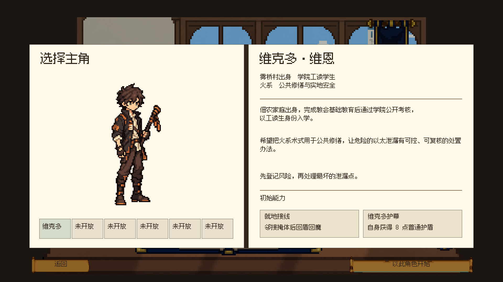

以太 · 开局场景样板
真实开始按钮：菜单收起 → 镜头移向桌上书本 → 书本展开 → 纸页展开接入角色档案。
本轮固定场景像素尺度，改进连续投影与档案转场。仍采用已有素材的书脊演出，新生图序列未通过检查，没有导入。
角色档案截图

制作与验证范围
六姿态独立生图共三轮，各帧宏像素格不统一，低于置信度门槛的帧被拒绝。原料、逐帧诊断、manifest 与拒绝结果均保留。本轮没有新生成的正式资产。已有空房间、景观和物件的组合方式沿用。
真实开始与返回按钮通过，返回后转场纸页 Alpha 为0，320×180场景输出保持Point采样。重复提交、禁用清理与关闭动画的两个回归测试均通过。继续游戏本轮未重新录制，上一轮录像可从原预览进入。
地图、任务与战利品预览 · 全部战斗外页面与上一轮录像